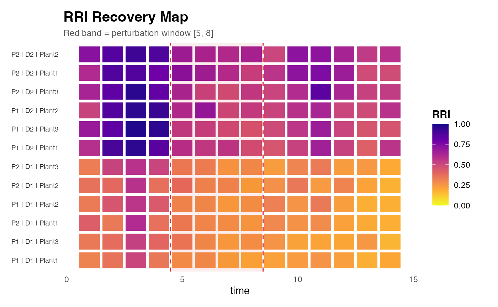

Visualises per-group RRI trajectories through baseline, perturbation and recovery phases as a tile-and-line map. Each row is one trajectory group; time proceeds along the x-axis; tile fill encodes RRI magnitude; vertical bands mark the perturbation window; and trajectory class is annotated on the right margin.
landscape shows cross-metric comparison per trajectory, while the recovery map shows temporal RRI dynamics per group.
Usage
plot_rri_recovery_map(
res,
id,
rec = NULL,
time_col = "time",
group_cols = c("plot", "depth", "plant_id"),
perturb_start = NULL,
perturb_end = NULL,
palette = "plasma",
base_size = 11,
max_groups = 40L
)Arguments
- res
An object returned by
rri_pipeline_st.- id
A data frame of experimental identifiers (same rows as
res$row_scores), containing at minimumtime_coland the columns ingroup_cols.- rec
Optional data frame from
rri_recovery_metrics. If supplied, trajectory class annotations are added to the right margin.- time_col
Character. Name of the time column in
id.- group_cols
Character vector. Columns in
iddefining trajectory groups (e.g.,c("plot", "depth", "plant_id")).- perturb_start
Numeric. Start of perturbation phase (same units as
time_col).- perturb_end
Numeric. End of perturbation phase.
- palette
Character. Viridis palette option for RRI fill.
- base_size
Numeric. Base font size.
- max_groups
Integer. Maximum number of trajectory groups to display. Groups are sampled if the total exceeds this value.
Examples
sim <- simulate_redox_holobiont(
n_plot = 2, n_depth = 2, n_plant = 3, n_time = 14,
p_micro = 20, seed = 101
)
res <- rri_pipeline_st(
ROS_flux = sim$ROS_flux,
Eh_stability = sim$Eh_stability,
micro_data = sim$micro_data,
id = sim$id,
reducer = "per_domain",
scaling = "pnorm"
)
#> Warning: Unanchored latent axes have arbitrary signs; RRI is exploratory, not directionally validated resilience.
#> Warning: Excluding simulator-derived hidden columns from scoring: Cacc_EAC, Cacc_EDC, Cacc_total, Cacc_fraction, net_oxidative_balance, alpha_accept, alpha_donate, k_accept_h, k_donate_h
rec <- rri_recovery_metrics(
res = res,
id = sim$id,
time_col = "time",
group_cols = c("plot", "depth", "plant_id"),
perturb_start = 5,
perturb_end = 8
)
plot_rri_recovery_map(
res = res,
id = sim$id,
rec = rec,
time_col = "time",
group_cols = c("plot", "depth", "plant_id"),
perturb_start = 5,
perturb_end = 8
)
